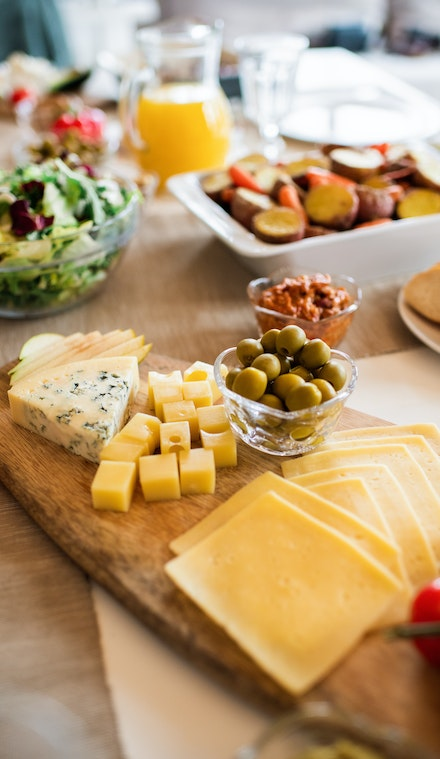
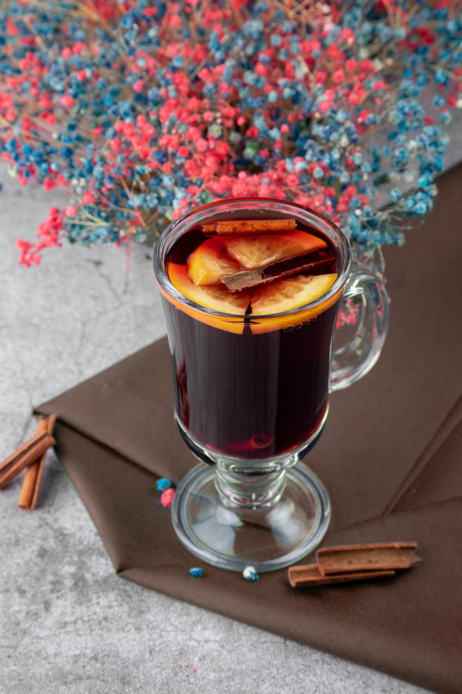
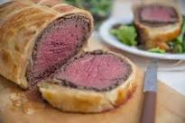
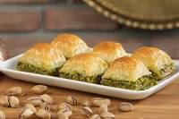

A continuacion y siguiendo con la idea de mostrar las culturas por medio de la gastronomia realizare un menu de 4 tiempos, dentro de la gastronomia los tiempos son la cantidad de platos que se van a servir en la mesa a cada persona, estos van desde las entradas hasta los postres, tambien son llamados "Momentos".
| Tiempo | Platos | |
|---|---|---|
| Primero |
Tabla de quesos: (link)
Una tabla de quesos es una preparación de diferentes quesos, dispuestos generalmente de forma artística con el objeto de servir a un conjunto de comensales una cierta variedad. Se puede acompañar de verduras o frutas que hagan contraste con los diferentes sabores y aromas de los quesos. Suele emplearse como un entrante o como plato principal. Origen ingles de la epico de reyes  |
|
| Segundo |
Vino caliente: (link)
Cuando aprieta el frío, cuando la nieve y el lodo se funden en un interminable charco oscuro como la noche, cuando cae el sol y el hielo crece como ajugas bajo la piel, pocas cosas resultan más reconfortantes para el cuerpo que un trago caliente. Puede ser chocolate, sopa de cebolla o mejor, un rico y especiado vino caliente. Origen europeo de la epoca de reyes  |
|
| Tercero |
Solomillo Wellington: (link)
El solomillo o buey Wellington es una forma de preparar el lomo de buey cubierto con paté y duxelle, envuelto luego en lonchas de jamón y hojaldre, y horneado. Algunas recetas incluyen envolver la carne cubierta en un crêpe para retener la humedad y evitar que el hojaldre se humedezca. Origen Ingles  |
|
| Cuarto |
Baklava: (link)
Se trata de un dulce turco, que también encontraréis fácilmente en Grecia, que podéis preparar en casa sin grandes complejidades pero se requiere de paciencia. Origen Turco  |
|